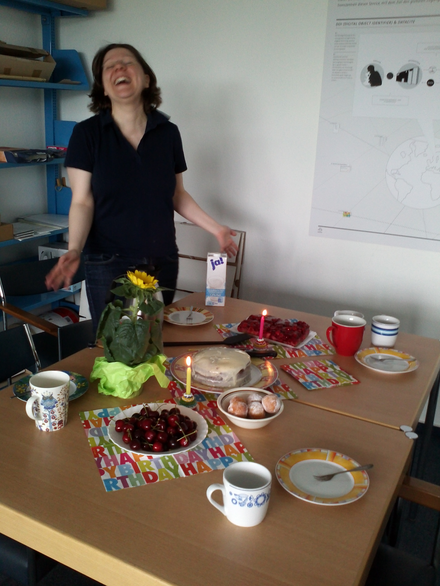
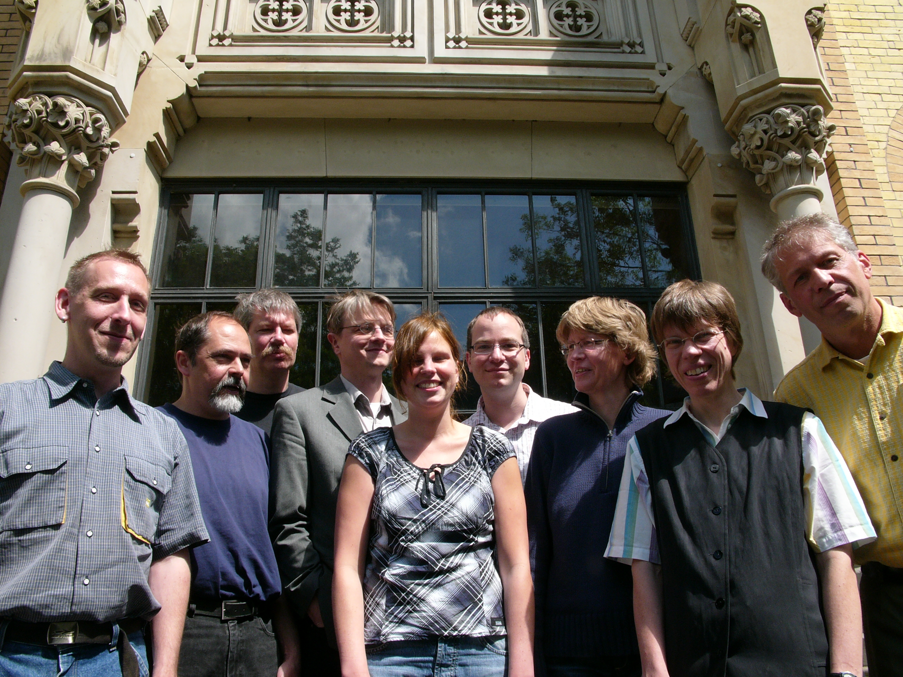

Dein DOI-Service Team
 Und natürlich auch von Irina Sens
Und natürlich auch von Irina Sens

und Anna: 
Komfor
Zur Erinnerung an das Projekt Komfor, hier ein quasi historisches Dokument: Ein Gruppenbild von 2007! Von links nach recht: Jens Klump, Michael Lautenschlager, Michael Diepenbroek, Jan Brase, Beate Hildebrand, Oliver Schindler, Heinke Hoeck, Irina Sens und Hannes Grobe
